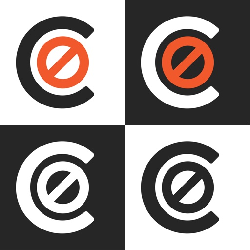
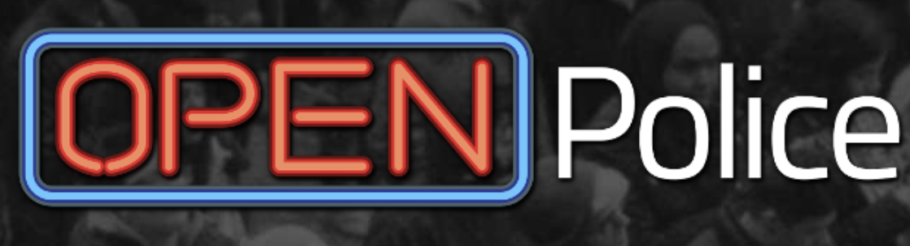

The PxPUC team is made up of a subset of members from Grief to Action (G2A) , a working group at the University of Pittsburgh's Center for Analytical Approaches.
Our team is made up of students, staff, and community members who came together this summer in the wake of George Floyd's murder to use data analysis to address structural racism in Pittsburgh and beyond.
The aim of this project is to analyze police union contracts and the barriers they pose to holding police officers accountable, as well as to demystify the police misconduct investigation process.
Our search tool allows users to easily look up information in these contracts, and helps them to become more familiar with some of the problematic language used within them and break this information down.
| Meet the Team | |||
|---|---|---|---|
| Yu-Ru Lin | Associate Professor at the University of Pittsburgh | ||
| Lead of the PISCO Lab | |||
| Name | Title | ||
| Other | |||
| Relevant Resources | |||
|---|---|---|---|
|  | Campaign Zero: A comprehensive platform of research-based policy solutions to end police brutality in America. | ||
|  | Open Police: Prepare, file, and track reports of police conduct because your story is too important to be ignored. | ||
| 412 Connect: promote and increase the visibility of Black-owned businesses in Pittsburgh and to expand their business presence on and around the University of Pittsburgh campus and the Pittsburgh community. | |||